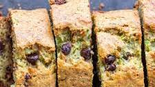

Banana Zuchinni Bread

Loaf cake made with a batter of grated Zuchinni,
smashed bananas and chocolate chips
Ingredients
- 3 large eggs
- 1 cup white sugar
- 1 cup grated zuchinni
- ¾ cup vegetable oil
- 2 bananas mashed
- ⅔ cup packed brown sugar
- 2 teaspoons vanilla extract
- 3 ½ cups all-purpose flour
- 1 tablespoon ground cinnamon
- 1 ½ teaspoons baking powder
- 1 teaspoon baking soda
- 1 teaspoon salt
- ½ cup dried cranberries
- ½ cup chopped walnuts
Steps
- Preheat the oven to 325 degrees F (165 degrees C). Grease and flour two 8x4-inch bread loaf pans.
- Beat eggs in a large bowl with an electric mixer until light yellow and frothy.
Add white sugar, zucchini, oil, bananas, brown sugar, and vanilla; beat until well combined. Stir in flour, cinnamon, baking powder, baking soda, and salt.
Fold in cranberries and nuts. Divide batter evenly between the prepared loaf pans.
- Bake in the preheated oven until a toothpick inserted into the center comes out clean, 45 to 50 minutes.
Allow to cool in the loaf pans on a wire rack before removing and serving.
Home